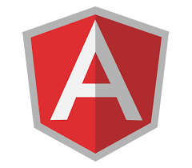

Un desarrollador web que se sigue preparando, autodidacta y en busqueda de nuevos desafios. Por haber vivido en el Reino Unido mi Ingles es alto, poseo ademas experiencia en el manejo de personal.
Por favor descargue mi Curriculum
del siguiente enlace...
Descargar CV
Servicios
Soy un técnico en reparación y armado de PC que decidió cambiar de rumbo y dejar la réparación como una segunda pasión, como me gusta el diseño y la lógica decidí incursionar en el mundo de la programación web y descubrí "a mis 39 años" ya grande, algo que me apasiona!!! el desarrollo web. Estoy muy comprometido a seguir capacitándome día a día con el desarrollo front con angular para plasmar todo lo aprendido en mi primer oportunidad IT. Estos son mis conocimientos:

Diseño Web
Poseo conocimientos y experiencia en desarrollo web con HTML5, CSS3, JavaScript, Angular y Node js
Reparación de PC
Poseo conocimientos y experiencia en el armado y la reparación de pc
Un poco sobre mí...
Tengo 40 años, en mi vida trabaje de todo un poco hasta que hace cuatro años descubri lo que mas me apasiona en la vida, la informática. Empeze a estudiar todo respecto a reparación de hardware y actualmente me desarrollo profesionalmente en ello, y ahora en el desarrollo de software front end. Estoy acostumbrado al trabajo bajo presión, me destaco por ser una persona muy autodidacta y absolutamente responsable por las tareas que realizó. Me gusta conocer a mis compañeros de trabajo como la persona que son, soy muy amable y colaborativo creo enormemente en la formación, desarrollo y potenciación de los grupos de trabajo, creo que todos podemos aprender cada dia algo nuevo. Tambien reconozco que soy una persona muy entusiasta con mucha energia que siempre buscara la forma de alcanzar el objetivo propuesto y me encanta estar continuamente en aprendizaje.
Aquí me presento
Hace ya mas de dos años que me vengo especializando
en el desarrollo de Front End.
Aquí algo de mi info:
- Nombre: Pablo Gustavo Ponce
- Edad: 40
- Nacionalidad: Argentino-Italiano
- Residencia: actualmente en Argentina, pero en abril 2021 me mudo a España
- Linkedin: https://www.linkedin.com/in/pablo-g-ponce/
- Github: https://github.com/honakiinformatica
Habilidades Técnicas





Opiniones
Muy profesional, todo el tiempo en contacto conmigo y el producto final fue mas que el esperado.
Le pedi un blog para deportes y obtuve mucho mas de lo que queria, muy agradecido.
Yo lo recomiendo porque son muy serios, ademas me solucionaron cualquier duda con raoidez.
Lo contrate para que me haga la pagina de mi empresa y obtuve lo que queria.